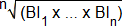

(1) Die Höhe der Asbestfaserexposition ist durch Arbeitsplatzmessungen gemäß TRGS 402 [5] i. V. m. DIN EN 689 [22] zu ermitteln. Diese wird durch das Messergebnis der auf eine 8-stündige Arbeitsschicht bezogenen durchschnittlichen Asbestfaserkonzentration (Schichtmittelwert) beschrieben.
(2) Zur Bestimmung der Asbestfaserkonzentration ist das rasterelektronen-mikroskopische Verfahren nach BGI 505-46 [6] anzuwenden. Als ergänzende Auswertekriterien zur Unterscheidung von Asbest und anderen ähnlichen Mineralen sind die in [3] genannten Hinweise zu beachten.
(3) Für die Ermittlung des Unterschreitens der Akzeptanzkonzentration von 10.000 F/m³ sind die Bewertungskriterien der DIN EN 689 [22] zusammen mit weiteren in diesem Anhang genannten Anforderungen anzuwenden. Hiernach kann die messtechnische Feststellung der Unterschreitung von 10.000 F/m³ durch Erfüllung der in den nachfolgenden Absätzen 4 bis 10 genannten Bedingungen nachgewiesen werden.
(4) Entweder für alle Messergebnisse (ME) von mindestens drei aufeinanderfolgenden Messungen muss
ME < ¼ x 10.000 F/m³
sein, oder der geometrische Mittelwert der Bewertungsindices (BI) der Messergebnisse (ME) von mindestens drei aufeinanderfolgenden Messungen (BI1 bis BIn) muss
 | ≤ | 0,5 |
sein.
Hierbei ist BI = Messergebnis in F/m³ geteilt durch 10.000 F/m³ (Akzeptanzkonzentration). Messergebnisse mit Kleiner-Vorzeichen (<-Werte), deren Zahlenwert die analytische Empfindlichkeit des Analyseverfahrens zur Bestimmung der Asbestfaserkonzentration darstellt, sind ohne Kleiner-Vorzeichen in die Berechnung einzubeziehen.
(5) Kontrollmessungen sind durchzuführen, wenn sich die Gefährdungssituation wesentlich geändert hat, z. B. durch Änderung der Betriebsverhältnisse (siehe Nummer 3.3 Absatz 2) oder die Bewertung nach Absatz 4 anhand des geometrischen Mittelwertes erfolgt ist.
(6) Da der Asbestgehalt in mineralischen Rohstoffen und daraus hergestellten Gemischen und Erzeugnissen in der Regel von Messung zu Messung schwanken kann, kann die Unterschreitung von 10.000 F/m³ durch Erfüllung der Bedingung aus der DIN EN 689 [22], dass 1 Messergebnis ≤ 1/10 x 10.000 F/m³ sein muss, nicht zuverlässig nachgewiesen werden. Dieses Kriterium darf hier nicht angewendet werden.
(7) "Aufeinanderfolgende Messungen" sind in stationären Betriebsstätten an unterschiedlichen Tagen und in denselben Arbeitsbereichen, auf Baustellen bei denselben Tätigkeiten auszuführen. Bei den Messungen sind die Randbedingungen entsprechend der TRGS 402 [5] zu erfassen.
(8) Die Messbedingungen sind so zu wählen, dass eine möglichst niedrige Nachweisgrenze erreicht wird. Die Nachweisgrenze darf 10.000 F/m³ nicht überschreiten, es sei denn, es ist ein Messergebnis oberhalb von 10.000 F/m³ festzustellen.
(9) Erlauben die Messungen keine Aussage über die Unterschreitung von 10.000 F/m³, so kann die Einhaltung der Akzeptanzkonzentration nicht festgestellt werden.
(10) Solange eine der o. g. Messserien nicht abgeschlossen ist, oder sobald ein Messergebnis einer Messserie 10.000 F/m³ überschreitet, kann die Unterschreitung des Wertes von 10.000 F/m³ nicht festgestellt werden.